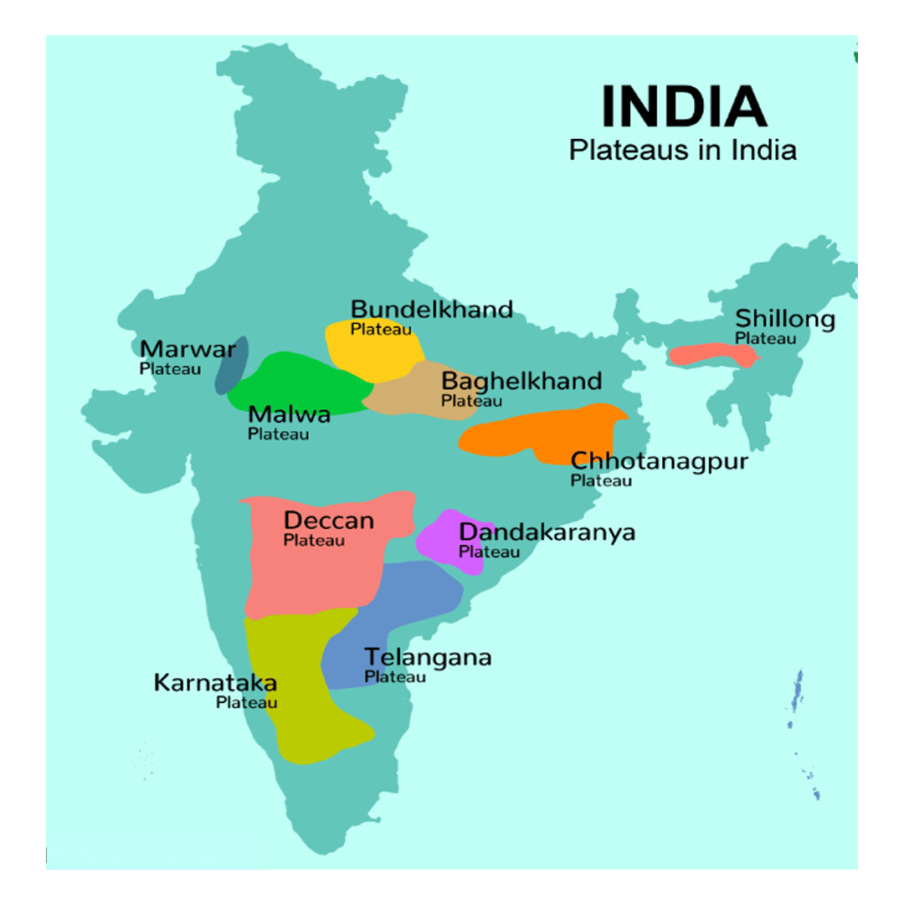
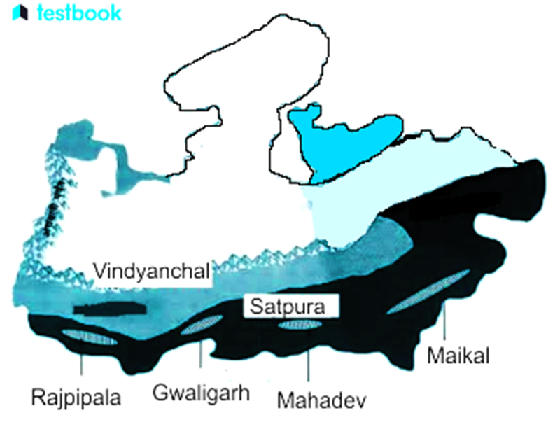
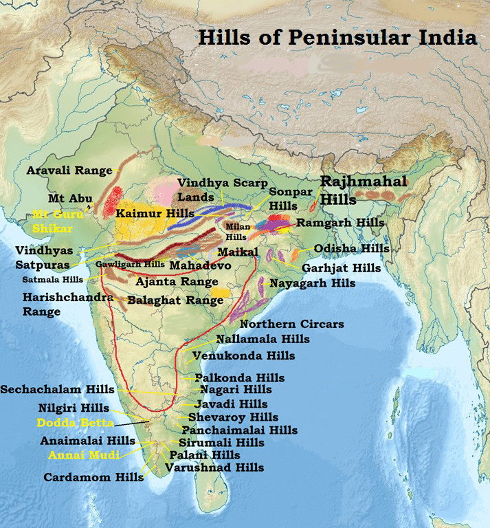
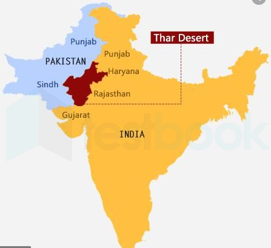

Physiographic Divisions Of India — Plateaus And Deserts
The Peninsular Plateau
The Peninsular Plateau is the oldest and largest physiographic division in India, with elevations between 600 to 900 meters. Shaped like an irregular triangle, it is bordered by the Delhi Ridge (an extension of the Aravallis) in the northwest, the Raj Mahal hills in the east, the Gir range in the west, and the Cardamom hills in the south.
Formed by the drifting and breaking of the Gondwana landmass, the plateau comprises ancient crystalline, igneous, and metamorphic rocks. The region has undergone repeated uplifts, submergence, faulting, and fracturing, leading to diverse relief features. The northwest part has ravines and gorges, including the ravines of Chambal, Bhind, and Morena. Notably, the Deccan Trap in this plateau is a black soil area formed from volcanic igneous rocks.
The Peninsular Plateau can be divided into three main regions based on relief features:
The Central Highlands: This area lies north of the Narmada River, covering most of the Malwa Plateau. The Aravallis lie to the north, and the Vindhyan Range to the south. Eastward, the plateau narrows and is known as Bundelkhand, Baghelkhand, and the mineral-rich Chotanagpur Plateau. The Deccan Plateau: South of the Narmada, this triangular plateau has the Satpura Range at its base and the Mahadev, Kaimur, and Maikal ranges as eastward extensions. Sloping gently eastward, it extends to the northeast as the Meghalaya, Karbi-Anglong Plateau, and North Cachar Hills. The Northeastern Plateau: An extension of the Peninsular Plateau, the Meghalaya Plateau is separated from the main plateau by a fault and consists of the Garo, Khasi, and Jaintia Hills, rich in minerals and experiencing heavy erosion due to monsoon rainfall.

Central Highlands (Madhya Bharat Plateau)
Location: Spans across parts of Madhya Pradesh, Rajasthan, Uttar Pradesh, and parts of Maharashtra. Geological Composition: Mainly sandstone, basalt, and sedimentary rocks. Height: Elevation ranges between 300-800 meters above sea level. Main Rivers: Chambal River, Kali Sindh River, Banas River, Parbati River, and Parwan River. Topography: The Central Highlands are marked by rolling plateaus, ridges, and hills. It includes the Chambal Ravines, known for their deep erosional valleys and badlands.
Subdivisions:
Bundelkhand Plateau: Location: Between Yamuna River in the north and Vindhyan Range in the south. Height: Elevation varies between 300 to 600 meters. Rivers: The Yamuna, Betwa, and Ken rivers flow through this region. Other Features: Known for ridges, hills, and ravines formed by river erosion. Malwa Plateau: Location: Northwestern part of the Central Highlands, covering parts of Madhya Pradesh. Height: Ranges from 500 to 700 meters. Rivers: The Narmada, Mahi, and Chambal rivers. Other Features: The plateau is characterized by flat-topped hills, basaltic lava deposits, and black soil.
Chambal Valley (Ravines): Location: Between the Madhya Bharat Plateau and the Bundelkhand Plateau. Height: Around 300 meters above sea level. Rivers: Chambal River forms the main feature of the valley. Other Features: Known for badlands and erosional features formed by the Chambal River.
Vindyachal Range and the Satpura Range:
| Feature | Vindyachal Range | Satpura Range |
|---|---|---|
| Location | Central India: Madhya Pradesh, Uttar Pradesh, Bihar | Central India: Madhya Pradesh, Maharashtra |
| Extent | 1,000 km, east-west | 800 km, east-west |
| Highest Peak | Dun (752 m) | Dhupgarh (1,350 m) |
| Geological Formation | Sandstone, Archaean rocks | Granite, basalt, sandstone |
|---|---|---|
| Major Rivers | Narmada, Son, Ken | Narmada, Tapi, Mahi |
| Climate | Semi-arid to temperate | Tropical, with monsoon rains |
| Vegetation | Scrub forests, dry deciduous | Dense forests, rich biodiversity |
| Ecological Signifciance | The natural barrier between Northern and Southern India | Rich in wildlife, national parks, sanctuaries |

Deccan Plateau
Location: Covers a large part of southern India, extending across Maharashtra, Karnataka, Telangana, Andhra Pradesh, Tamil Nadu, and parts of Madhya Pradesh. Geological Composition: Primarily made of basaltic lava (Deccan Traps) formed by ancient volcanic activity. Height: Elevation ranges from 500 meters in the north to over 1,000 meters in the southern parts. Main Rivers: Godavari, Krishna, Kaveri, Mahanadi, and Tungabhadra. Topography: The plateau is characterized by flat-topped hills, river valleys, and basaltic rock formations.
Subdivisions:
Maharashtra Plateau: Location: Covers most of Maharashtra. Height: Ranges between 600 to 1,000 meters. Rivers: The Godavari, Krishna, and Tungabhadra rivers flow through this region. Other Features: Known for black soil and lava plateau. It is rich in minerals, especially bauxite, iron ore, and coal.
Karnataka Plateau: Location: Covers most of Karnataka. Height: Ranges between 600 to 900 meters. Rivers: The Krishna, Tungabhadra, and Kaveri rivers. Other Features: The region is marked by hills, forests, and fertile soils suitable for agriculture. The Western Ghats lie on the western edge, contributing to the plateau's high biodiversity.
Telangana Plateau: Location: Covers the state of Telangana. Height: Varies from 500 to 1,000 meters. Rivers: The Godavari and Krishna rivers. Other Features: Known for granite and limestone deposits. It also has rich deposits of coal and limestone.
Andhra Plateau: Location: Covers the state of Andhra Pradesh. Height: Around 500 to 900 meters. Rivers: Godavari and Krishna. Other Features: Famous for its basaltic terrain, bauxite deposits, and forests. Tamil Nadu Plateau: Location: Spreads across southern Tamil Nadu. Height: Ranges from 300 to 600 meters. Rivers: Kaveri and its tributaries. Other Features: The plateau is known for its agriculture, granite hills, and rich soil for crops like rice and cotton.
Northeastern Plateau
Location: Lies in the northeastern part of India, covering Arunachal Pradesh, Assam, Nagaland, Manipur, Mizoram, Meghalaya, and parts of Tripura. Geological Composition: Made up of sandstone, limestone, and schist. Height: Varies between 300 to 1,500 meters. Main Rivers: Brahmaputra, Barak, and Irawaddy. Topography: The terrain is marked by hills, valleys, and high plateaus. This region is known for its dense forests and high rainfall.
Subdivisions :
Meghalaya Plateau: Location: Covers Meghalaya, Assam, and parts of Nagaland. Height: Between 900 to 1,500 meters. Rivers: The Brahmaputra, Barak, and Irawaddy rivers. Other Features: Known for its limestone caves and biodiversity. Karbi Anglong Plateau: Location: Spans across parts of Assam. Height: Ranges between 600 to 900 meters. Rivers: The Brahmaputra and its tributaries. Other Features: The plateau is covered with dense forests and is rich in coal and limestone.
Naga Hills Plateau: Location: Spans parts of Nagaland and Myanmar. Height: Between 800 to 2,000 meters. Rivers: Chindwin River and Brahmaputra tributaries. Other Features: Known for its hilly terrain, rich biodiversity, and high rainfall.
| Plateau Type | Subdivisions | Location | Elevation | Rivers | Key Features |
|---|---|---|---|---|---|
| Central Highlands | Bundelkhand, Malwa, Chambal | Madhya Pradesh, Rajasthan, Uttar Pradesh | 300-800 meters | Chambal, Kali Sindh, Banas, Parbati | Rolling hills, ravines, badlands |
| Deccan Plateau | Maharashtra, Karnataka, Telangana, Andhra, Tamil Nadu | Maharashtra, Karnataka, Telangana, Andhra Pradesh, Tamil Nadu | 500-1,500 meters | Godavari, Krishna, Kaveri, Mahanadi | Lava plateaus, basaltic terrain, minerals |
|---|---|---|---|---|---|
| Northeastern Plateau | Meghalaya, Karbi Anglong, Naga Hills | Arunachal Pradesh, Assam, Nagaland, Mizoram, Meghalaya | 300-2,000 meters | Brahmaputra, Barak, Irawaddy | Hilly terrain, limestone caves, forests |
Western Ghats (Sahyadris)
The Western Ghats are continuous mountain ranges that run parallel to the western coast of India, forming a major barrier to the monsoon winds and contributing significantly to India’s climate and biodiversity.
Formation and Structure:
Formation : Formed by the subduction of the Arabian Plate and the tilting of the
Indian Peninsula towards the east during the Himalayan uplift. The range is characterized by block mountains and escarpments. The western slope is steep, forming Treppen or step-like escarpments, while the eastern slope is more gradual, merging into the plateau.
Geographical Spread:
Stretches from Tapi Valley in the north to Kanyakumari in the south. It is spread across six states: Gujarat, Maharashtra, Goa, Karnataka, Tamil Nadu, and Kerala. It is one of the hottest biodiversity hotspots in the world and a UNESCO World Heritage site. The Western Ghats are known by different local names such as Sahyadri in Maharashtra, Nilgiri hills in Karnataka and Tamil Nadu and Anaimalai hills, and Cardamom hills in Kerala. The height of the Western Ghats progressively increases from north to south. The highest peaks include the Anai Mudi (2,695 meters) and the Doda Betta (2,637 meters).
Sections of the Western Ghats:
Northern Western Ghats (From Tapi Valley to 16°N) :
Composed mainly of basaltic lava from the Deccan Traps. Average elevation: 1,200 meters. The highest peak is Kalsubai (1,646 meters). Other notable peaks: are Salher (1,567 meters), Mahabaleshwar (1,438 meters), and Harishchandragarh (1,424 meters). This region is rugged and dissected by numerous rivers like the Godavari, Krishna, and Tungabhadra. Major river valleys: Tungabhadra, Mahi, Narmada, and Tapi. Central Western Ghats (Around 16°N to 13°N): Composed of granite and gneiss, which are older and more weathered than the northern basalt. More continuous in nature and has dense forests, making it ecologically rich. Idukki Hills (Kerala), Anamudi (2,695 meters) – the highest peak in the Western Ghats, located in the Eravikulam National Park. Rivers like the Periyar, Kaveri, and Bhavani originate in this region. Southern Western Ghats (South of 13°N): Characterized by higher peaks and wider valleys. Includes Nilgiri Hills and the Anamalai Hills. Highest peaks: Meghamalai (1,590 meters), Agasthyakoodam (1,868 meters), Anamudi (2,695 meters). The region has significant biodiversity, especially in the Silent Valley and Parambikulam. Rivers: Kaveri, Bhavani, Periyar, and Narmada.
Ecological Significance:
The Western Ghats are a UNESCO World Heritage Site and a biodiversity hotspot with a large number of endemic species. Home to tropical rainforests, savannas, and wetlands. Influences monsoon patterns by intercepting the southwest monsoon winds and causing heavy rainfall, especially in Kerala and coastal regions.
Important hills of the Western Ghats from North to South
| Hill Range | Location | Additional Information |
|---|---|---|
| Satpura Range | Madhya Pradesh, Maharashtra, Gujarat | Forms the northern edge of the Western Ghats. |
| Satmala Hills | Maharashtra | Part of the Deccan Plateau extends to the Thane district. |
| Harishchandra Range | Maharashtra | Known for Harishchandragad Fort, steep terrain. |
| Baba Budan Hills | Karnataka | Famous for the Baba Budangiri range, sacred to Hindus and Muslims. |
| Nilgiri Hills | Tamil Nadu, Kerala, Karnataka | Known for its biodiversity, tea gardens, and the Nilgiri Biosphere Reserve. |
| Anaimalai Hills | Tamil Nadu, Kerala | Known as the Elephant Mountains; part of the Western Ghats. |
| Anai Mudi | Kerala | The highest peak in the Western Ghats is located in the Anaimalai Hills. |
| Agasthyamalai | Kerala, Tamil Nadu | Named after the sage Agastya, a major biodiversity hotspot. |
| Cardamom Hills | Kerala, Tamil Nadu | Known for its cardamom plantations, the southernmost range of India. |

Economic and Cultural Importance:
Known for tea, coffee, and spice plantations, especially in Kerala, Karnataka, and Tamil Nadu. Tourism: Popular for hill stations like Mahabaleshwar, Munnar, and Coorg. Agriculture: The region supports agriculture due to its fertile soils, including rice, spices, and tropical fruits.
Eastern Ghats
The Eastern Ghats are discontinuous mountain ranges that run parallel to the eastern coast of India, from the West Bengal coast in the north to the Tamil Nadu coast in the south. Mahendragiri (1,501 meters) is the highest peak in the Eastern Ghats.
Formation and Structure:
The Eastern Ghats are older and more dissected compared to the Western Ghats. They are formed from crystalline rocks, including gneisses and granites, and are weathered over time. The Eastern Ghats are not as continuous as the Western Ghats and are marked by gaps and valleys through which rivers flow.
Geographical Spread:
Runs parallel to the eastern coast of India, from Odisha and West Bengal in the north to Tamil Nadu in the south. Extends over Odisha, Andhra Pradesh, Telangana, Karnataka, and Tamil Nadu.
Sections of the Eastern Ghats:
Northern Eastern Ghats (Odisha and Andhra Pradesh) :
Extends from West Bengal to Andhra Pradesh. Includes Similipal Hills and Kailashgiri. The highest peak: is Mahendragiri (1,501 meters) in Odisha. Rivers: Mahanadi, Godavari, Krishna, and Vamsadhara. Central Eastern Ghats (Andhra Pradesh and Telangana): The Ananthagiri and Nallamala Hills are prominent here. Known for forests and rich biodiversity. Major rivers: Krishna and Godavari. Southern Eastern Ghats (Tamil Nadu): The range becomes lower and more dissected in the southern part. Prominent hills include Nilgiri Hills, Anaimalai Hills, and Shevaroys Hills. Highest Peak: Javadi Hills. The Palar and Vaigai rivers originate from this section.
Ecological Significance:
The Eastern Ghats are not as biologically rich as the Western Ghats, but they still contain several national parks and wildlife sanctuaries, such as the Similipal Wildlife
Sanctuary (Odisha) and Nallamala Forests (Andhra Pradesh). Important for the flora and fauna of the region, including tiger reserves and habitats for elephants and deer.
Economic Importance:
The Eastern Ghats are home to rich mineral resources, particularly bauxite and iron ore, with mining industries in states like Odisha and Andhra Pradesh. Agriculture: The fertile valleys support rice, cotton, and tobacco crops.
Important hills of the Eastern Ghats from North to South
| Hill Range | Location | Additional Information |
|---|---|---|
| Mahendragiri Hills | Odisha, Andhra Pradesh | One of the highest peaks in the Eastern Ghats. |
| Simhachalam Hills | Andhra Pradesh | Known for the Simhachalam Temple, a signifciant religious site. |
| Kailasagiri Hills | Andhra Pradesh | Famous for scenic views and tourist destinations near Visakhapatnam. |
| Nallamala Hills | Andhra Pradesh, Telangana | Rich in biodiversity, home to the Nallamala forest. |
| Palkonda Hills | Andhra Pradesh | Located in the Rayalaseema region, characterized by steep ridges. |
| Rayadurg Hills | Andhra Pradesh | Located in the Rayadurg region of Andhra Pradesh, part of the Eastern Ghats. |
| Velikonda Hills | Andhra Pradesh, Tamil Nadu | Known for its granite ridges and ecological signifciance. |
| Javadi Hills | Tamil Nadu | Famous for the Javadi Hills plateau and rich fol ra. |
| Shevaroy Hills | Tamil Nadu | Known for the hill station Yercaud, popular for cofefe plantations. |
|---|---|---|
| Anaimalai Hills | Tamil Nadu, Kerala | Part of the Southern Eastern Ghats, located in Tamil Nadu and Kerala. |
Key Differences Between Western and Eastern Ghats:
| Feature | Western Ghats | Eastern Ghats |
|---|---|---|
| Continuity | Continuous mountain range | Discontinuous and fragmented |
| Height | Generally higher (up to 2,695 m) Highest Peak - Anamudi | Lower in height (up to 1,501 m) Highest Peak - Mahendragiri |
| Rivers | Mainly fol wing rivers (e.g., Godavari, Krishna, Kaveri) | Mainly fol wing rivers (e.g., Mahanadi, Godavari, Krishna) |
| Ecological Signifciance | Rich in biodiversity, the UNESCO World Heritage | Moderate biodiversity, home to some reserves |
| Geological Composition | Basaltic lava, granites, gneisses | Crystalline rocks, gneisses, granites |
The Thar Desert (Great Indian Desert)
The Thar Desert is one of the most prominent geographical features in the northwestern part of the Indian subcontinent. Known for its arid conditions, unique ecosystem, and historical significance, the desert forms a natural boundary between India and Pakistan.
Alternate Names: Great Indian Desert, Marusthali (meaning 'Land of Deserts' in Sanskrit). Area: Spans about 200,000 square kilometers in total, with approximately 85% of the desert located within India (around 170,000 km²), primarily in Rajasthan. It also extends into Gujarat, Punjab, and Haryana in India, and the Sindh province in Pakistan. Global Rank: The 17th-largest desert in the world and the 9th-largest hot subtropical desert. Geographical Boundaries: To the west, it is bordered by the Indus River Plain. To the north and northeast, it meets the Punjab Plain. The Aravalli Range forms the southeastern boundary. To the south, it is bordered by the Rann of Kachchh.

Geographical and Topographical Features:
Location: Lies northwest of the Aravalli Hills. Surface Features: The surface consists of undulating topography shaped by wind action and physical weathering.
Features longitudinal dunes, barchans (crescent-shaped dunes), and sandy plains. Barchans are crescent-shaped dunes formed by wind blowing in one direction. Mushroom Rocks and Oases: These are prominent natural formations, with oases found primarily in the southern region of the desert. Shifting Sand Dunes: The sand dunes in the Thar Desert shift frequently due to the constant wind action.
Climate:
Average Annual Rainfall: Below 150 mm per year, making it a hyper-arid region. Summer: Extremely hot, with temperatures often reaching up to 50°C. Dust storms and strong winds are typical, especially between May and June, where wind speeds can reach 140-150 km/h. Winter: In January, the desert experiences cold temperatures between 5°C to 10°C, with occasional frost.
Dust Storms: These are common in the summer months, contributing to the extreme dryness and low visibility.
Geological Features:
Mesozoic Era: The desert was believed to have been underwater during the Mesozoic era. Fossilized wood and marine deposits have been found in places like Aakal and Brahmsar near Jaisalmer, with some fossils estimated to be around 180 million years old. Akal Wood Fossil Park: A National Geological Monument of India, located in Jaisalmer, it contains fossilized tree trunks and other ancient remains, providing evidence of the desert's once-aquatic past.
Rivers and Water Bodies:
Ephemeral Rivers: Most of the rivers in the Thar Desert are ephemeral, meaning they only flow seasonally or after rainfall.
Luni River: The primary river in the region, it originates in the Aravalli Range and flows towards the south, but it eventually disappears into the sands, and its flow is often intermittent. Other smaller rivers and streams often vanish into the sand and exhibit inland drainage, joining lakes or playas (dry lake beds).
Oases: Found primarily in the southern part of the desert, oases are crucial for sustaining life and vegetation. Examples include Phalodi, Jaisalmer, and Barmer, where underground water sources support agriculture and human settlements.
Flora and Fauna:
Despite its harsh conditions, the Thar Desert supports a variety of plant and animal life. Flora:
Cacti, acacia, and sacrificial plants like khejri (Prosopis cineraria) and thar (Salvadora oleoides) are common. Desert shrubs and grass species are adapted to survive in low-water conditions. Fauna: Mammals: Includes blackbuck antelope, chinkara (Indian gazelle), desert fox, and wild boar. Reptiles: Common species include sand boas and lizards. Birds: The region is home to the Indian bustard, Desert Eagle Owl, and sand grouse. Insects: Includes locusts, desert beetles, and various species of scorpions and termites.
Human Settlement and Economic Activities:
The Thar Desert is sparsely populated, but there are significant settlements in cities like Jaisalmer, Barmer, Jodhpur, and Phalodi. Agriculture: Limited irrigation from underground water sources supports the cultivation of wheat, barley, and millets. The desert also supports livestock farming, particularly camels, sheep, and goats. Minerals: The desert region has deposits of salt, gypsum, limestone, and phosphates. Oil reserves are also present, especially near Barmer. Tourism: The desert's unique landscape, historical forts, and palaces in places like Jaisalmer attract numerous tourists.
Ecological Importance:
The Western Ghats and Rann of Kachchh ecosystems interact with the Thar Desert, creating unique biodiversity corridors. The Thar Desert plays a critical role in climate regulation and is an important part of India's hydrological cycle, despite its arid conditions. As one of the world's biodiversity hotspots, it contributes significantly to global ecological health.